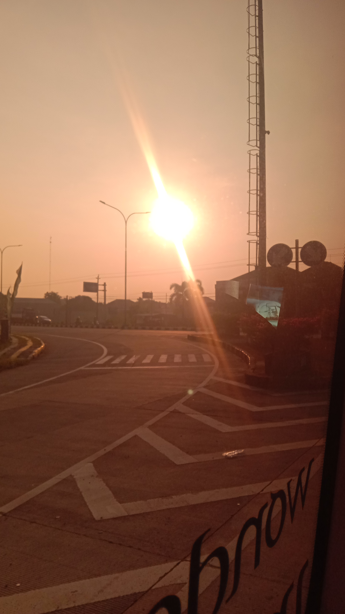

Bangkalan
Berada diujung paling barat pulau Madura dan saat ini telah dibangun jembatan terpanjang di Indonesia,jembatan Suramadu (Surabaya-Madura)
Madura adalah nama pulau yang terletak
di sebelah utara Jawa Timur.
Besarnya kurang lebih 5.250km2(lebih kecil dari Pulau Bali). Dengan penduduk sebanyak 4 juta jiwa. Madura dibagi menjadi 4 Kabupaten, Bangkalan, Sampang, dan Sumenep.
| Luas | 792,3 Km |
|---|---|
| Populasi | 844.550(2015) |
| 924.550(2020) | |
| Kode Pos | 693xx |
| Fauna Resmi | Sapi Sonok |
Berada diujung paling barat pulau Madura dan saat ini telah dibangun jembatan terpanjang di Indonesia,jembatan Suramadu (Surabaya-Madura)
Uniknya Sumenep yang merupakan salah satu Kabupaten di Madura selain terdiri dari wilayah daratan, terdiri pula dari kepulauan yang berjumlah 126 pulau
Kabupaten Pamekasan merupakan salah satu kota pendidikan yang ada di Pulau Madura, hal tersebut cukup familiar karena Pamekasan lebih mendominasi adanya perguruan tinggi baik negeri maupun swasta,perguruan tinggi tersebut juga tersebar mulai dari perkotaan hingga daerah ujung Pamekasan.
Predikat Kabupaten Pamekasan sudah diresmikan oleh Menteri Pendidikan dan Kebudayaan Moh. Nuh pada akhir tahun 2012 lalu, sejak saat itulah Kabupaten pamekasan secara resmi mendeklarasikan diri menjadi kabupaten Pendidikan.
sebagai kabupaten dengan sebutan kota pendidikan di pulau madura terdapat beberapa kampus islam yang tersebar diberbagai wilayah Kabupaten Pamekasan. kampus islam tersebut berbasis pesantren, tidak jarang mahasiswa nyantri sekaligus berkuliah.
|
UNIVERSITAS ISLAM MADURA |
berada di jalur sebelah barat kabupaten pamekasan, tepatnya di desa bettet kabupaten Pamekasan |
|---|---|
|
INSTITUT AGAMA ISLAM AL KHAIRAT |
berada di kecamatan palengngaan Kabupaten Pamekasan, kampus ini lebih lebih condong kearah barat dibandingkan dengan uim |
paragraf kedua di dalam section elemen div
paragraf ketiga dielemen div diluar section
paragraf keempat diluar div
|
|
Sampang merupakan kota yang menyusul kemajuan dari Bangkalan,mengapa demikian dikarenakan Kabupaten ini sudah memiliki akses darat yang sudah mumpuni. Kabupaten ini berhasil membangun Tol Sampang 5 tahun terakhir ini. Hal tersebut berdampak positif bagi pengguna transportasi jalur darat. |
|---|